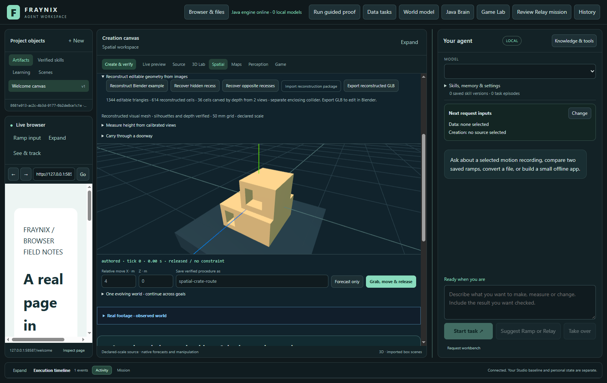
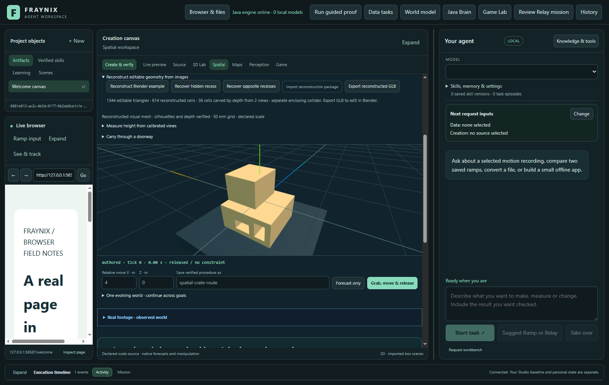
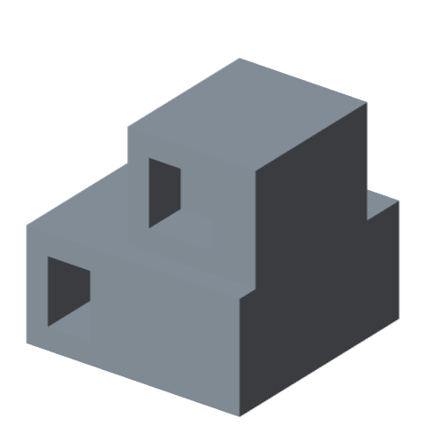
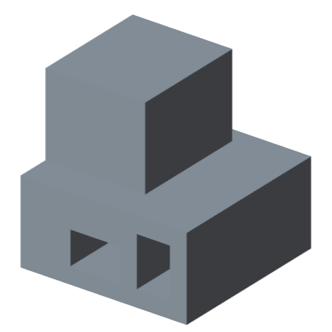

Combine depth from opposing views
Two registered Blender depth views recover opposite recesses in one editable mesh. Java refuses views that contradict each other.
The combined mesh recovered 100 mm and 150 mm recesses, removing 36 cells. Blender checked 392 offset rays and two withheld oblique silhouettes.

Fraynix combines both depth views in the editable mesh

The opposite side shows the second recess
Withheld view of the original positive-side recess

Blender render of the recovered positive-side recess

Withheld view of the original negative-side recess
Blender render of the recovered negative-side recess
System files
Open source